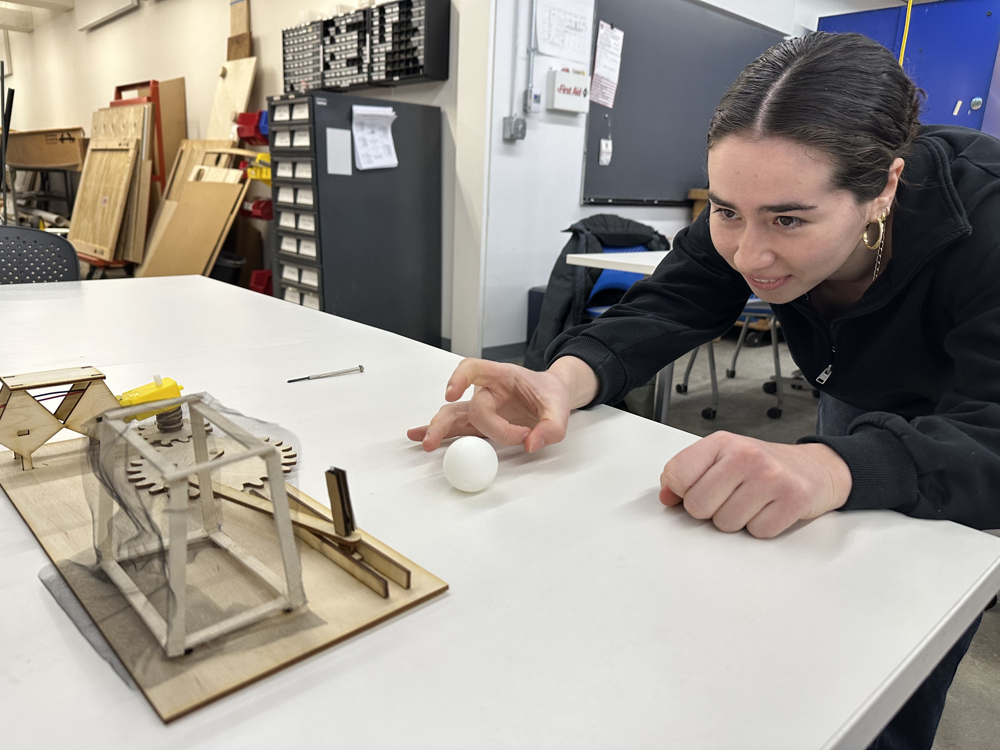
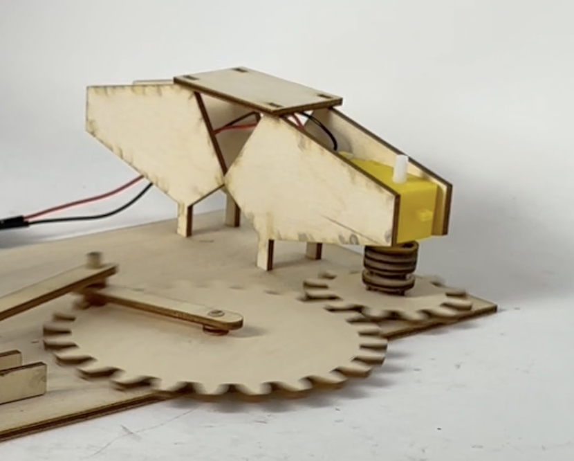
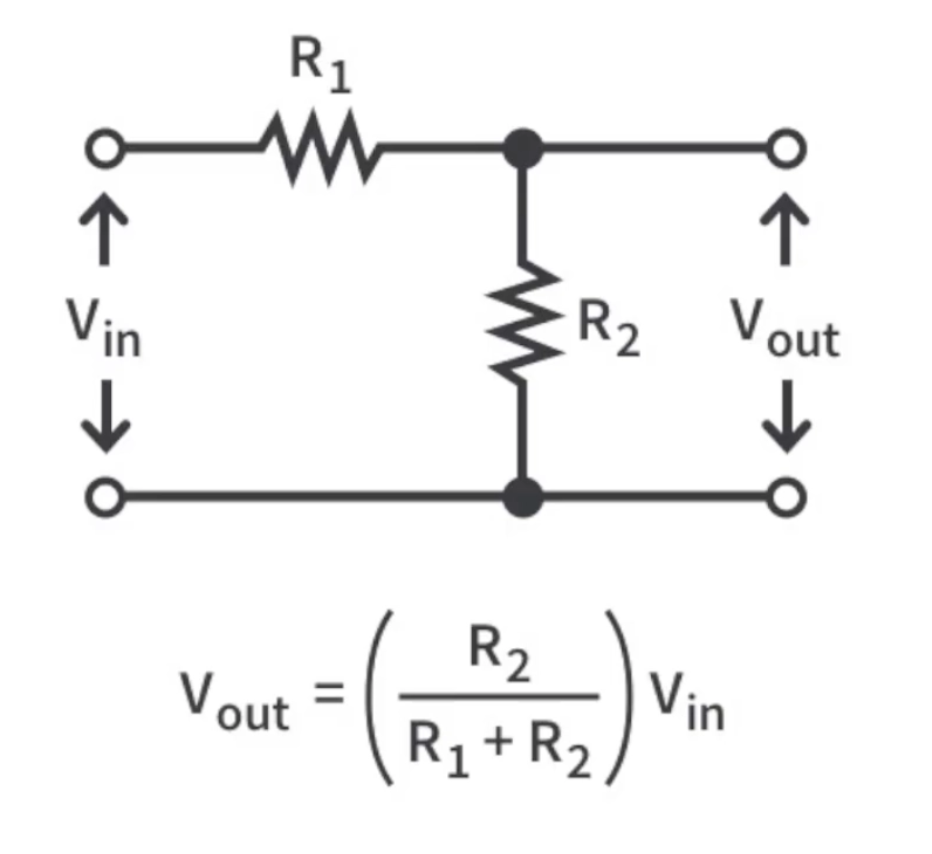
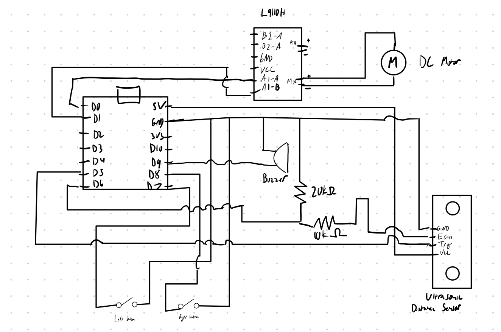
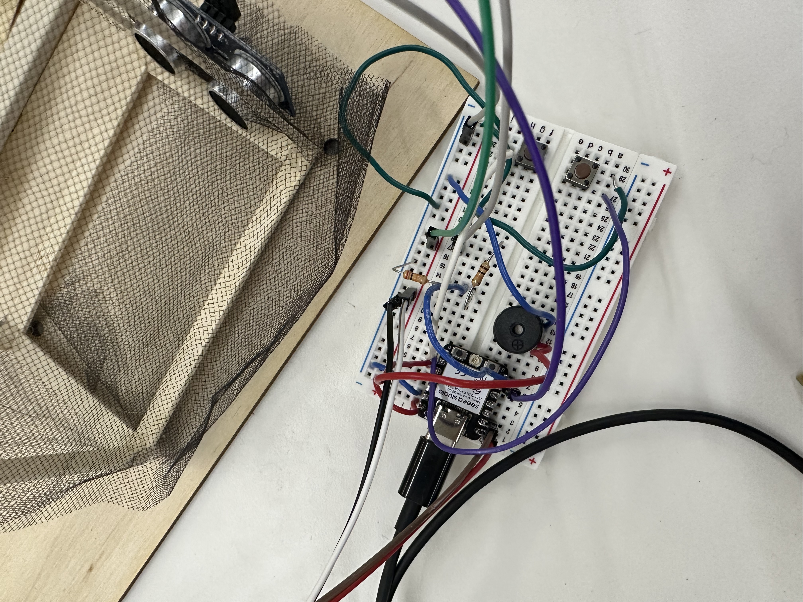
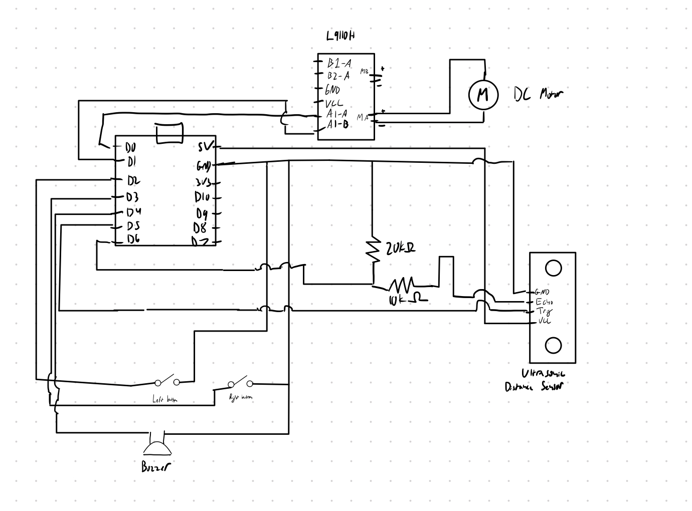

<div class="textcontainer typewriter-texture">
<p class="margin"> </p>
<h3>Week 4: Microcontroller Programming</h3>
<h4>Introduction</h4>
<p>For this week, I wanted to expand my goalie kinematic sculpture from last week. The main way I planned to do this was to use a potentiometer to control the motor. From lab, I thought that I could use the mapping function to map the potentiometer scale to a full rotation of the motor shaft, as this rotates the small gear by one rotation, which then rotates the larger gear by half a rotation, representing the range of motion from one end of the goal to the other.</p>
<p>After doing some online research and confirming with Kassia, I quickly realized the yellow DC motor has no way of knowing where it's current position is, so would not have a way of mapping the potentiometer to an exact angle without introducing additional hardware.</p>
<p>There were two potential paths I could take: Either use two buttons to control the direction of the yellow DC motor, or I could figure out how to implement a stepper motor with a potentiometer. For the potentiometer, I would also need to use a button to "reset" the goalie.</p>
<p>Last week, I learned it is prudent to start with something simple, and then you can expand. Thus, I decided to pursue the two button approach, and then if sufficient time, shift to using the stepper motor.</p>
<h4>Initial Implementation</h4>
<p>I started out with the Arduino code we used for the L9110 H, and then I modified it to keep track of the button presses to determine motor direction.</p>
<pre><code><span class="keyword">const</span> <span class="keyword">int</span> A1A = D0;
<span class="keyword">const</span> <span class="keyword">int</span> A1B = D1;
<span class="keyword">const</span> <span class="keyword">int</span> leftButtonPin = D7;
<span class="keyword">const</span> <span class="keyword">int</span> rightButtonPin = D8;
<span class="keyword">int</span> leftVal;
<span class="keyword">int</span> rightVal;
<span class="keyword">void</span> <span class="function">setup</span>() {
Serial.<span class="function">begin</span>(<span class="number">9600</span>);
<span class="function">pinMode</span>(A1A, OUTPUT);
<span class="function">pinMode</span>(A1B, OUTPUT);
<span class="function">digitalWrite</span>(A1A, LOW); <span class="comment">// start with the motors off</span>
<span class="function">digitalWrite</span>(A1B, LOW);
<span class="function">pinMode</span>(leftButtonPin, INPUT_PULLUP);
<span class="function">pinMode</span>(rightButtonPin, INPUT_PULLUP);
}
<span class="keyword">void</span> <span class="function">loop</span>() {
<span class="comment">// Read button values</span>
leftVal = <span class="function">digitalRead</span>(leftButtonPin);
rightVal = <span class="function">digitalRead</span>(rightButtonPin);
<span class="comment">// If both buttons are pressed or if neither is pressed, stop the motor</span>
<span class="keyword">if</span> ((leftVal == LOW && rightVal == LOW) || (leftVal == HIGH && rightVal == HIGH)) {
<span class="function">digitalWrite</span>(A1A, LOW);
<span class="function">digitalWrite</span>(A1B, LOW);
}
<span class="comment">// Left button pressed, move counter-clockwise</span>
<span class="keyword">else if</span> (leftVal == LOW && rightVal == HIGH) {
<span class="function">digitalWrite</span>(A1A, HIGH);
<span class="function">digitalWrite</span>(A1B, LOW);
}
<span class="comment">// Right button pressed, move clockwise</span>
<span class="keyword">else</span> {
<span class="function">digitalWrite</span>(A1A, LOW);
<span class="function">digitalWrite</span>(A1B, HIGH);
}
}
</code></pre>
<p>Here's a video of the button control working:</p>
<iframe width="640" height="480" src="https://www.youtube.com/embed/Xtw0-0a5usE" frameborder="0" allow="accelerometer; autoplay; clipboard-write; encrypted-media; gyroscope; picture-in-picture" allowfullscreen></iframe>
<p>One thing I noticed, as you can see in the video, is that when the motor switches directions, it jumps around a bit, so if I proceeded with the button setup I would need to reprint the board to bring the motor housing closer to the gear so that more of the motor is firmly locked in the housing to prevent it from jumping out of place.</p>

<p>I also performed some user testing (thanks Eliza!) to determine if the width of the goalie is sufficient, and it seems like the 10 mm width is still sufficient to block shots, so I decided to not adjust the width for now.</p>
<h4>Extension</h4>
<p>After completing the initial working version of the controllable goalie, I wanted to expand the scope. Given that pursuing the stepper motor path would entail reprinting the board and motor housing and require using a different power driver for practically the same result (controlling the goalie), I decided it would be much more interesting to extend the project along a different dimension: I would use an sensor to detect when a goal is scored, and then use that detection to activate a buzzer.</p>
<p>Because I was continuing with the DC motor, I reprinted the motor housing sides to be much longer, which would then clamp the motor into place. This was much more material efficient than my initial idea of reprinting the base board.</p>

<p>For the buzzer, I chose a small SM buzzer, and followed <a href="https://www.instructables.com/How-to-use-a-Buzzer-Arduino-Tutorial/" target="_blank">this Instructables tutorial</a>. For the sensor I chose an HC-SR04 ultrasonic sensor, and followed <a href="https://projecthub.arduino.cc/Isaac100/getting-started-with-the-hc-sr04-ultrasonic-sensor-7cabe1" target="_blank">this Arduino tutorial</a>. However, given that the echo pin of the sensor is 5V, and we are working with a 3.3V microcontroller, I would need to scale down the voltage before returning the signal to the microcontroller, or else I would risk frying it. Victor recommended using a voltage divider setup, so I followed portions of a <a href="https://www.youtube.com/watch?v=SIc6zj06bhQ&t=117s" target="_blank">YouTube tutorial</a> to understand and set up the divider.</p>

<p>As we can see in the circuitry and equation above, as long as `R_2 = 2 * R_1`, we will get the 2/3 ratio needed to scale 5V to 3.3V. Thus, I chose a 20K ohm resistor for `R_2` and a 10K ohm resistor for `R_1`.</p>
<p>This is the circuit diagram I ended up with:</p>

<p>This is what that looks like on the board:</p>

<p>To affix the sensor to the goal, I cut small holes in the mesh net to slide the sensor through.</p>
<p>Here is what I ended up with for code:</p>
<pre><code><span class="keyword">const</span> <span class="keyword">int</span> A1A = D0;
<span class="keyword">const</span> <span class="keyword">int</span> A1B = D1;
<span class="keyword">const</span> <span class="keyword">int</span> leftButtonPin = D7;
<span class="keyword">const</span> <span class="keyword">int</span> rightButtonPin = D8;
<span class="keyword">const</span> <span class="keyword">int</span> buzzerPin = D9;
<span class="keyword">const</span> <span class="keyword">int</span> trigPin = D5;
<span class="keyword">const</span> <span class="keyword">int</span> echoPin = D6;
<span class="keyword">int</span> leftVal;
<span class="keyword">int</span> rightVal;
<span class="keyword">float</span> duration, distance;
<span class="keyword">void</span> <span class="function">setup</span>() {
<span class="comment">// Serial.begin(9600);</span>
<span class="function">pinMode</span>(A1A, OUTPUT);
<span class="function">pinMode</span>(A1B, OUTPUT);
<span class="function">pinMode</span>(buzzerPin, OUTPUT);
<span class="function">digitalWrite</span>(A1A, LOW); <span class="comment">// start with the motors off</span>
<span class="function">digitalWrite</span>(A1B, LOW);
<span class="function">pinMode</span>(leftButtonPin, INPUT_PULLUP);
<span class="function">pinMode</span>(rightButtonPin, INPUT_PULLUP);
<span class="function">pinMode</span>(trigPin, OUTPUT);
<span class="function">pinMode</span>(echoPin, INPUT);
}
<span class="keyword">void</span> <span class="function">loop</span>() {
<span class="comment">// Read button values</span>
leftVal = <span class="function">digitalRead</span>(leftButtonPin);
rightVal = <span class="function">digitalRead</span>(rightButtonPin);
<span class="comment">// If both buttons are pressed or if neither is pressed, stop the motor</span>
<span class="keyword">if</span> ((leftVal == LOW && rightVal == LOW) || (leftVal == HIGH && rightVal == HIGH)) {
<span class="comment">// Serial.println("Both pressed or neither");</span>
<span class="function">digitalWrite</span>(A1A, LOW);
<span class="function">digitalWrite</span>(A1B, LOW);
}
<span class="comment">// Left button pressed, move counter-clockwise</span>
<span class="keyword">else if</span> (leftVal == LOW && rightVal == HIGH) {
<span class="comment">// Serial.println("Left pressed");</span>
<span class="function">digitalWrite</span>(A1A, HIGH);
<span class="function">digitalWrite</span>(A1B, LOW);
}
<span class="comment">// Right button pressed, move clockwise</span>
<span class="keyword">else</span> {
<span class="comment">// Serial.println("Right pressed");</span>
<span class="function">digitalWrite</span>(A1A, LOW);
<span class="function">digitalWrite</span>(A1B, HIGH);
}
<span class="comment">// Send signal</span>
<span class="function">digitalWrite</span>(trigPin, LOW);
<span class="function">delayMicroseconds</span>(<span class="number">2</span>);
<span class="function">digitalWrite</span>(trigPin, HIGH);
<span class="function">delayMicroseconds</span>(<span class="number">8</span>);
<span class="function">digitalWrite</span>(trigPin, LOW);
<span class="comment">// Receive signal</span>
duration = <span class="function">pulseIn</span>(echoPin, HIGH);
distance = (duration\*.<span class="number">0343</span>)/<span class="number">2</span> \* <span class="number">10</span>; <span class="comment">// Get distance in mm</span>
<span class="comment">// If an object is detected in the net</span>
<span class="keyword">if</span> (distance < <span class="number">80</span> || distance > <span class="number">1000</span>) {
<span class="comment">// Ring the buzzer</span>
<span class="function">tone</span>(buzzerPin, <span class="number">2000</span>);
}
<span class="keyword">else</span> {
<span class="comment">// Turn the buzzer off</span>
<span class="function">noTone</span>(buzzerPin);
}
<span class="function">delay</span>(<span class="number">100</span>);
}
</code></pre>
<p>At baseline, the sensor hits the mesh net on the other side around ~110mm away, so 80mm was a safe bet for under. I had to check for distance > 1000 because when the ball is right next to the sensor it returns very long distances like 2k, 10k.</p>
<p>Here's the system in action, which I am calling "Blockautomaton Bobby."</p>
<iframe width="640" height="480" src="https://www.youtube.com/embed/bqGHrA0Pvog" frameborder="0" allow="accelerometer; autoplay; clipboard-write; encrypted-media; gyroscope; picture-in-picture" allowfullscreen></iframe>
<h4>Additional Troubleshooting</h4>
<p>As I was running the contraption, I ran into brown outs a few times, and then when trying to re-upload the code, was running into exit status 2 errors. After troubleshooting with Victor for a couple of hours, we figured out that a reliable way to reset the microcontroller was to hold the boot button, hit the reset button, and then release the boot button. We also moved the D7-D9 pins to D2-D4 and this seemed to fix the issue, so it might be that the microcontroller was using D7-D9 for other purposed under the hood.</p>
<p>Here is the updated code snippet for the pin setup:</p>
<pre><code><span class="keyword">const</span> <span class="keyword">int</span> A1A = D0;
<span class="keyword">const</span> <span class="keyword">int</span> A1B = D1;
<span class="keyword">const</span> <span class="keyword">int</span> leftButtonPin = D2;
<span class="keyword">const</span> <span class="keyword">int</span> rightButtonPin = D3;
<span class="keyword">const</span> <span class="keyword">int</span> buzzerPin = D4;
<span class="keyword">const</span> <span class="keyword">int</span> trigPin = D5;
<span class="keyword">const</span> <span class="keyword">int</span> echoPin = D6;
</code></pre>
<p>Along with the updated circuit diagram:</p>

<h4>Another Extension</h4>
<p>One thing still didn't sit right with me: the 100 ms delay in the loop. Thus, after the Week 5 lab I decided to refactor the entire Arduino file to use a class-based approach to eliminate any latency that the delay introduced. I decided to create classes for the goal and goalie, as those are the two "units" I view in this system.</p>
<pre><code><span class="keyword">const</span> <span class="keyword">int</span> A1A = D0;
<span class="keyword">const</span> <span class="keyword">int</span> A1B = D1;
<span class="keyword">const</span> <span class="keyword">int</span> leftButtonPin = D2;
<span class="keyword">const</span> <span class="keyword">int</span> rightButtonPin = D3;
<span class="keyword">const</span> <span class="keyword">int</span> buzzerPin = D4;
<span class="keyword">const</span> <span class="keyword">int</span> trigPin = D5;
<span class="keyword">const</span> <span class="keyword">int</span> echoPin = D6;
<span class="keyword">class</span> <span class="type">Goalie</span>{
<span class="comment">// Member variables</span>
<span class="keyword">int</span> a1;
<span class="keyword">int</span> b1;
<span class="keyword">int</span> leftButton;
<span class="keyword">int</span> rightButton;
<span class="keyword">public</span>:
<span class="function">Goalie</span>(<span class="keyword">int</span> setA, <span class="keyword">int</span> setB, <span class="keyword">int</span> setLeft, <span class="keyword">int</span> setRight) {
<span class="comment">// Assign member variables</span>
a1 = setA;
b1 = setB;
leftButton = setLeft;
rightButton = setRight;
}
<span class="keyword">void</span> <span class="function">begin</span>() {
<span class="comment">// Declare pins</span>
<span class="function">pinMode</span>(a1, OUTPUT);
<span class="function">pinMode</span>(b1, OUTPUT);
<span class="function">pinMode</span>(leftButton, INPUT_PULLUP);
<span class="function">pinMode</span>(rightButton, INPUT_PULLUP);
<span class="comment">// Start with motors off</span>
<span class="function">digitalWrite</span>(a1, LOW);
<span class="function">digitalWrite</span>(b1, LOW);
}
<span class="keyword">void</span> <span class="function">controlGoalie</span>() {
<span class="comment">// Read button values</span>
<span class="keyword">int</span> leftVal = <span class="function">digitalRead</span>(leftButtonPin);
<span class="keyword">int</span> rightVal = <span class="function">digitalRead</span>(rightButtonPin);
<span class="comment">// If both buttons are pressed or if neither is pressed, stop the motor</span>
<span class="keyword">if</span> ((leftVal == LOW && rightVal == LOW) || (leftVal == HIGH && rightVal == HIGH)) {
<span class="function">digitalWrite</span>(A1A, LOW);
<span class="function">digitalWrite</span>(A1B, LOW);
}
<span class="comment">// Left button pressed, move counter-clockwise</span>
<span class="keyword">else if</span> (leftVal == LOW && rightVal == HIGH) {
<span class="function">digitalWrite</span>(A1A, HIGH);
<span class="function">digitalWrite</span>(A1B, LOW);
}
<span class="comment">// Right button pressed, move clockwise</span>
<span class="keyword">else</span> {
<span class="function">digitalWrite</span>(A1A, LOW);
<span class="function">digitalWrite</span>(A1B, HIGH);
}
}
};
<span class="keyword">class</span> <span class="type">Goal</span>{
<span class="comment">// Member variables</span>
<span class="keyword">int</span> trig;
<span class="keyword">int</span> echo;
<span class="keyword">int</span> buzzer;
<span class="keyword">unsigned long</span> delayTime;
<span class="keyword">unsigned long</span> previousMillis;
<span class="keyword">public</span>:
<span class="function">Goal</span>(<span class="keyword">int</span> setTrig, <span class="keyword">int</span> setEcho, <span class="keyword">int</span> setBuzzer) {
<span class="comment">// Set up member variables</span>
trig = setTrig;
echo = setEcho;
buzzer = setBuzzer;
}
<span class="keyword">void</span> <span class="function">begin</span>() {
<span class="comment">// Declare pins</span>
<span class="function">pinMode</span>(trig, OUTPUT);
<span class="function">pinMode</span>(echo, INPUT);
<span class="comment">// Start with trig off</span>
<span class="function">digitalWrite</span>(trig, LOW);
previousMillis = <span class="function">millis</span>();
}
<span class="keyword">void</span> <span class="function">runSensor</span>(<span class="keyword">long</span> setDelay) {
delayTime = setDelay;
<span class="comment">// Get current time</span>
<span class="keyword">unsigned long</span> currentMillis = <span class="function">millis</span>();
<span class="comment">// Check if it is time to receive signal</span>
<span class="keyword">if</span> ((currentMillis - previousMillis) >= delayTime) {
<span class="comment">// Send pulse</span>
<span class="function">digitalWrite</span>(trig, LOW);
<span class="function">delayMicroseconds</span>(<span class="number">2</span>);
<span class="function">digitalWrite</span>(trig, HIGH);
<span class="function">delayMicroseconds</span>(<span class="number">8</span>);
<span class="function">digitalWrite</span>(trig, LOW);
<span class="comment">// Receive signal</span>
<span class="keyword">float</span> duration = <span class="function">pulseIn</span>(echo, HIGH);
<span class="keyword">float</span> distance = (duration\*.<span class="number">0343</span>)/<span class="number">2</span> \* <span class="number">10</span>; <span class="comment">// Get distance in mm</span>
Serial.<span class="function">println</span>(duration);
<span class="comment">// If an object is detected in the net</span>
<span class="keyword">if</span> (distance < <span class="number">80</span> || distance > <span class="number">1000</span>) {
<span class="comment">// Ring the buzzer</span>
<span class="function">tone</span>(buzzer, <span class="number">2000</span>);
}
<span class="keyword">else</span> {
<span class="comment">// Turn the buzzer off</span>
<span class="function">noTone</span>(buzzer);
}
<span class="comment">// Log time and update state</span>
previousMillis = currentMillis;
}
}
};
<span class="comment">// Initialize goalie and goal</span>
<span class="type">Goalie</span> bobby(A1A, A1B, leftButtonPin, rightButtonPin);
<span class="type">Goal</span> goal(trigPin, echoPin, buzzerPin);
<span class="keyword">void</span> <span class="function">setup</span>() {
bobby.<span class="function">begin</span>();
goal.<span class="function">begin</span>();
}
<span class="keyword">void</span> <span class="function">loop</span>() {
<span class="comment">// Control goalie</span>
bobby.<span class="function">controlGoalie</span>();
<span class="comment">// Send and receive signal after delay of 100 ms</span>
goal.<span class="function">runSensor</span>(<span class="number">100</span>);
}
</code></pre>
<p>I added the begin methods because while testing, I ran into issues where the goalie ran, but the goal didn't, and an AI debugging tool explained it might be because C++ constructors could be called before the hardware is ready, so pinMode is called before the pin is available. Thus, by saving this action to run during setup, we are guaranteeing the hardware is ready.</p>
<p class="margin"> </p>
</div>